Integration Guide
This guide helps developers integrate their applications and websites with Macro Browser. It covers Web3 integration, optimizing for privacy features, and working with the browser's unique capabilities.
Overview
Macro Browser provides several integration points for developers:

Web3 Integration
Detecting Macro Browser
You can detect if a user is browsing with Macro Browser through the user agent or by checking for the Macro Browser provider:
// Check for Macro provider
function isMacroBrowser() {
return typeof window.ethereum !== 'undefined' &&
window.ethereum.isMacro === true;
}
// Optimal approach - feature detection
async function detectMacroBrowser() {
if (typeof window.ethereum !== 'undefined') {
try {
const provider = window.ethereum;
const providerInfo = await provider.request({ method: 'web3_clientVersion' });
return providerInfo.toLowerCase().includes('macro');
} catch (error) {
console.error('Error detecting browser:', error);
return false;
}
}
return false;
}
Connecting to the Wallet
Macro Browser follows the EIP-1193 standard for wallet connections:
// Example of connecting to the user's wallet
async function connectWallet() {
if (typeof window.ethereum !== 'undefined') {
try {
// Request account access
const accounts = await window.ethereum.request({
method: 'eth_requestAccounts'
});
// Get the connected account
const account = accounts[0];
console.log('Connected account:', account);
return account;
} catch (error) {
if (error.code === 4001) {
// User rejected the connection request
console.log('User rejected connection request');
} else {
console.error('Error connecting to wallet:', error);
}
return null;
}
} else {
console.log('Ethereum provider not found');
return null;
}
}
Handling Chain Switching
Users may need to switch between different blockchain networks:
// Example of requesting a chain switch
async function switchToChain(chainId) {
try {
await window.ethereum.request({
method: 'wallet_switchEthereumChain',
params: [{ chainId }],
});
return true;
} catch (error) {
// This error code indicates the chain has not been added to the wallet
if (error.code === 4902) {
try {
await addChain(chainId);
return true;
} catch (addError) {
console.error('Error adding chain:', addError);
return false;
}
}
console.error('Error switching chain:', error);
return false;
}
}
// Example of adding a new chain
async function addChain(chainId) {
const chainParams = getChainParams(chainId);
await window.ethereum.request({
method: 'wallet_addEthereumChain',
params: [chainParams],
});
}
// Helper to get chain parameters
function getChainParams(chainId) {
// Example for Polygon
if (chainId === '0x89') {
return {
chainId: '0x89',
chainName: 'Polygon Mainnet',
nativeCurrency: {
name: 'MATIC',
symbol: 'MATIC',
decimals: 18
},
rpcUrls: ['https://polygon-rpc.com/'],
blockExplorerUrls: ['https://polygonscan.com/']
};
}
// Add other chains as needed
// ...
}
Sending Transactions
Transactions in Macro Browser follow standard Web3 patterns with enhanced security:
// Example of sending a transaction
async function sendTransaction(to, value, data = '0x') {
try {
const transactionParameters = {
to,
from: window.ethereum.selectedAddress,
value: value.toString(16), // Convert to hex
data
};
// Optional: Let the wallet estimate gas
// Or you can estimate and include it:
// transactionParameters.gas = await estimateGas(transactionParameters);
const txHash = await window.ethereum.request({
method: 'eth_sendTransaction',
params: [transactionParameters],
});
console.log('Transaction sent:', txHash);
return txHash;
} catch (error) {
console.error('Error sending transaction:', error);
throw error;
}
}
Best Practices for dApps
When building dApps for Macro Browser:
- Always use feature detection rather than user agent sniffing
- Handle wallet connection rejection gracefully
- Provide clear transaction information to help users make informed decisions
- Implement proper error handling for all Web3 interactions
- Support multiple chains where appropriate
- Consider privacy implications of your dApp's design
- Test with Macro Browser during development
Privacy Features Integration
Content Security Policy
Macro Browser enforces strict Content Security Policy (CSP) rules. Ensure your site works with strong CSP headers:
<!-- Example of a strong CSP header -->
<meta http-equiv="Content-Security-Policy" content="
default-src 'self';
script-src 'self' https://trusted-cdn.com;
style-src 'self' https://trusted-cdn.com;
img-src 'self' https://trusted-cdn.com data:;
connect-src 'self' https://api.yourservice.com;
frame-src 'none';
object-src 'none';
base-uri 'self';
form-action 'self';
frame-ancestors 'none';
upgrade-insecure-requests;
">
Tracker-Free Design
Design your site to work without trackers and third-party cookies:
- Avoid third-party resources when possible
- Self-host critical scripts rather than using CDNs
- Don't rely on fingerprinting for identification
- Use local storage sparingly (it's cleared between sessions)
- Implement privacy-respecting analytics if needed
Performance with Ad Blocking
Optimize your site to work well with ad blockers:
- Don't use class names that trigger ad blockers (e.g., "ad", "banner", "sponsor")
- Avoid DOM structures similar to ads
- Don't load content from known ad domains
- Test your site with ad blockers enabled
UI Integration
Dark Mode Support
Macro Browser uses dark mode by default. Ensure your site supports dark mode:
/* Example of dark mode support */
:root {
--text-color: #333;
--background-color: #fff;
--link-color: #0066cc;
}
@media (prefers-color-scheme: dark) {
:root {
--text-color: #eee;
--background-color: #222;
--link-color: #6699ff;
}
}
body {
color: var(--text-color);
background-color: var(--background-color);
}
a {
color: var(--link-color);
}
Responsive Design
Ensure your site is fully responsive and works well at different viewport sizes:
- Use responsive layouts with flexbox or grid
- Test on various screen sizes
- Implement proper touch support for mobile users
- Optimize loading performance for all devices
AI Search Optimization
Optimize your content for Macro Browser's AI-powered search:
- Use clear, descriptive page titles
- Implement proper semantic HTML (headings, lists, etc.)
- Include concise meta descriptions
- Structure content logically with clear sections
- Use schema.org markup for enhanced understanding
<!-- Example of schema.org markup for a product -->
<div itemscope itemtype="http://schema.org/Product">
<h1 itemprop="name">Product Name</h1>
<img itemprop="image" src="product.jpg" alt="Product Image">
<p itemprop="description">Product description goes here...</p>
<div itemprop="offers" itemscope itemtype="http://schema.org/Offer">
<span itemprop="price">$19.99</span>
<meta itemprop="priceCurrency" content="USD">
</div>
</div>
Testing with Macro Browser
Development Environment Setup
To test your site or dApp with Macro Browser during development:
- Install Macro Browser for your platform
- Configure developer mode in settings
- Use the developer tools (similar to Chrome DevTools)
- Test with all privacy features enabled
Common Integration Issues
Watch out for these common integration problems:
- Reliance on persistent storage across sessions
- Assuming availability of third-party scripts that might be blocked
- Not handling wallet connection rejections properly
- UI issues in dark mode
- Performance problems due to blocked resources
Compatibility Checklist
✅ Site works with strict Content Security Policy
✅ All critical functionality works without third-party cookies
✅ Dark mode design is implemented and tested
✅ Web3 connections handle all error cases gracefully
✅ No dependencies on known tracking domains
✅ Semantic HTML is used throughout the site
✅ Site performs well with ad/tracker blocking enabled
Advanced Integration
Extension Development
Macro Browser supports a limited set of extensions focused on privacy and security:
- Focus on privacy-enhancing features
- Avoid requiring broad permissions
- Follow Manifest V3 guidelines
- Submit to the Macro Browser extension review process
Custom Protocol Handlers
Register custom protocol handlers for your application:
// Example of registering a protocol handler
if ('registerProtocolHandler' in navigator) {
navigator.registerProtocolHandler(
'web+yourprotocol',
'https://yourapp.com/handle?url=%s',
'Your App Name'
);
}
Support and Resources
- Developer Discord: Join our community at discord.gg/macrobrowser
- GitHub Repository: github.com/macro-browser/macro-browser
- Documentation: docs.macrobrowser.com
- Issue Tracker: github.com/macro-browser/macro-browser/issues